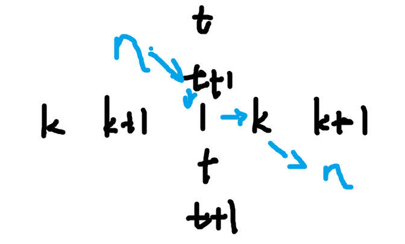

AGC035 赛后总结
|字数总计:2.9k|阅读时长:13分钟|阅读量:
比赛链接：https://atcoder.jp/contests/agc035/tasks
A. XOR Circle
题目链接：https://atcoder.jp/contests/agc035/tasks/agc035_a
题目大意：把 $n$ 个数字放在一个环上，满足任意相邻的三个数字 $A,B,C$ 都满足： $A\otimes C = B$ 。
做法
不妨假设前三个数字为 $A,B,A\otimes B$ ，那么我们可以得到后面的数字为：$A,B,A\otimes B…$ ，可以看到 $3$ 是这个圆的周期。
因此，如果 $n$ 是 $3$ 的倍数，就是有三组 $n$ 个数字且异或和为 $0$ 。
否则就是所有数字都是 $0$ 。
时间复杂度：$O(n\log{n})$ ，而且不难做到 $O(n)$ 。
1
2
3
4
5
6
7
8
9
10
11
12
13
14
15
16
17
18
19
20
21
| #include<bits/stdc++.h>
using namespace std;
const int N = 1e5 + 5;
int n, a[N];
bool pd(int l, int r){
return a[l] == a[r];
}
bool solve(){
cin >> n;
for(int i = 1; i <= n; i++){
cin >> a[i];
}
sort(a + 1, a + n + 1);
if(n % 3 != 0) return pd(1, n) && !a[1];
return pd(1, n / 3) && pd(n / 3 + 1, n / 3 * 2) && pd(n / 3 * 2 + 1, n) && (a[n / 3] ^ a[n / 3 * 2] ^ a[n]) == 0;
}
int main(){
if(solve()) cout << "Yes\n";
else cout << "No\n";
return 0;
}
|
B. Even Degrees
题目链接：https://atcoder.jp/contests/agc035/tasks/agc035_b
题目大意：给每条边定个向，满足每个点的出度为偶数。
题解
这个问题可以等价的转化为一个经典问题：能不能进行边匹配，满足匹配边之间有一个公共点。（无重边）
这个问题有解的条件是：连通且边数为偶数。
做法是：把 $DFS$ 树建出来，然后把所有返祖边存在子树内，然后从下到上，依次把每个点的非父亲边两两匹配，如果剩下一条就和父亲边匹配，如果没有，就把父亲边像返祖边一样丢给父亲，显然在边数为偶数的情况下，这样一定能匹配完所有的边。
时间复杂度：$O(n)$ 。
1
2
3
4
5
6
7
8
9
10
11
12
13
14
15
16
17
18
19
20
21
22
23
24
25
26
27
28
29
30
31
32
33
34
35
36
37
38
39
40
41
42
43
44
45
46
47
48
49
50
51
52
53
54
55
56
57
58
59
60
61
62
63
64
65
66
67
| #include<bits/stdc++.h>
using namespace std;
const int N = 1e5 + 5;
struct node{
int y, next;
}a[N * 2]; int len, las[N];
void ins(int x, int y){
a[++len] = {y, las[x]};
las[x] = len;
}
vector<int> gfa[N];
int fa[N], dfn[N], ti;
int n, m, sta[N], top;
void dfs(int x){
dfn[x] = ++ti;
sta[++top] = x;
for(int k = las[x]; k; k = a[k].next){
int y = a[k].y;
if(y == fa[x]) continue;
if(dfn[y] && dfn[y] < dfn[x]) gfa[x].push_back(y);
else if(!dfn[y]){
fa[y] = x;
dfs(y);
}
}
}
void print(int x, int y){
cout << x << " " << y << "\n";
}
int main(){
cin >> n >> m;
if(m & 1){
cout << "-1\n";
return 0;
}
for(int i = 1; i <= m; i++){
int x, y;
cin >> x >> y;
ins(x, y);
ins(y, x);
}
dfs(1);
for(int i = 1; i <= n; i++){
while(gfa[i].size() >= 2){
int x = gfa[i].back();
gfa[i].pop_back();
int y = gfa[i].back();
gfa[i].pop_back();
print(i, x);
print(i, y);
}
}
for(int i = n; i >= 1; i--){
int now = sta[i];
while(gfa[now].size() >= 2){
int x = gfa[now].back();
gfa[now].pop_back();
int y = gfa[now].back();
gfa[now].pop_back();
print(now, x);
print(now, y);
}
if(!gfa[now].size()) gfa[fa[now]].push_back(now);
else print(now, gfa[now][0]), print(now, fa[now]);
}
return 0;
}
|
update ：
在看完题解后，感觉自己像个小丑，我这个做法完全可以这么翻译：
我在 $DFS$ 树上给非树边定向后，从下到上，对于每个点，如果出边为奇数，那么就把父亲边调转，何必多次一举去做匹配的过程。
或者说可以这么考虑，发现匹配过程得到的匹配对是完全没有用的，我们完全可以假装我们匹配过了，然后直接把点的所有非父亲边弹出，并根据数量决定需不需要父亲边。
还是写复杂了。
C. Skolem XOR Tree
题目链接：https://atcoder.jp/contests/agc035/tasks/agc035_c
题目大意：给你 $2n$ 个点，$i,i+n$ 的权值都是 $n$ ，要求你构造一棵树，满足 $i,i+n$ 路径（包括端点）的异或和为 $i$ 。
做法
不懂，感觉现在不会构造题啊，比赛时被这道题卡了一路。
首先注意到一个事情：$n=2^n$ 无解。
剩下的情况，如果 $n$ 是奇数的话，我们注意到可以：
$1$ 放中间，然后 $2k,2k+1$ 这样子放：$2k, 2k+1, 1, 2k, 2k+1$ 。
而 $1$ 的匹配可以随便找一个 $2k,2k+1$ 放在其屁股后面。
如果 $n$ 是偶数，那么假设 $n = k + t$ ，其中 $k,t$ 的或为 $0$ ，那么可以通过走 $k,k+1$ 和 $t,t+1$ 的路来跑出 $n$ 的路。

时间复杂度：$O(n)$ 。
1
2
3
4
5
6
7
8
9
10
11
12
13
14
15
16
17
18
19
20
21
22
23
24
25
26
27
28
29
| #include<bits/stdc++.h>
using namespace std;
int n;
int lowbit(int x){return x & -x;}
void print(int x, int y){
cout << x << " " << y << "\n";
}
int main(){
cin >> n;
if(lowbit(n) == n){
cout << "No\n";
return 0;
}
cout << "Yes\n";
for(int i = 3; i <= n; i += 2){
print(i - 1, i);
print(i, 1);
print(1, i - 1 + n);
print(i - 1 + n, i + n);
}
print(n + 1, n + 3);
if(n % 2 == 0){
int x = lowbit(n);
int y = n ^ x;
print(n, x + 1);
print(n + n, y + n);
}
return 0;
}
|
D. Add and Remove
题目链接：https://atcoder.jp/contests/agc035/tasks/agc035_d
题目大意：给你 $n$ 个数字，每次可以选择相邻的三个数字，把中间的数字删掉并且加到旁边两个数字，问最后剩下的两个数字之和的最小值。
我的做法
一种很新的状压 $dp$ 。
首先不大可能同时考虑整个序列，毕竟被删的位置没法决定当前的状态，和删除的顺序也有关，因此逐个位置考虑。
发现一个事情，一个数字删除后在的位置一定是相邻的两个格子，而其对最终答案的贡献取决于其这两个格子左右删除的顺序。
因此我们可以设一个 $dp[state]$ ，$state$ 表示当前这个数字对应的删除顺序。
然后直接转移就行了。
时间复杂度：$O(n2^n)$ 。
感觉这个状压 $dp$ 非常的有意思。
1
2
3
4
5
6
7
8
9
10
11
12
13
14
15
16
17
18
19
20
21
22
23
24
25
26
27
28
29
30
31
32
33
34
35
36
37
38
39
40
41
42
43
44
45
46
47
48
49
50
51
52
53
54
55
56
57
58
59
60
61
62
63
64
65
66
67
68
69
70
71
72
| #include<bits/stdc++.h>
using namespace std;
typedef long long LL;
const int B = 16;
LL dp[2][(1 << B)];
LL cnt[(1 << B)], a[B + 5];
int n;
int gethighbit(int x){return 31 - __builtin_clz(x);}
int getbit(int x, int y){return (x >> y) & 1;}
int changebit(int x, int y, int k){return x ^ ((getbit(x, y) ^ k) << y);}
int lowbit(int x){return x & -x;}
void init(){
cnt[1] = 2ll;
for(int i = 1; i < n; i++){
for(int x = 0; x < (1 << i); x++){
int tmp = x;
LL lc = 1ll, rc = 1ll;
for(int j = 0; j < i; j++){
int now = tmp & 1;
tmp >>= 1;
if(!now) rc = rc + lc;
else lc = lc + rc;
}
cnt[changebit(x, i, 1)] = lc + rc;
}
}
}
int main(){
cin >> n;
n -= 2;
init();
for(int i = 0; i <= n + 1; i++){
cin >> a[i];
}
if(n == 0){
cout << a[0] + a[1] << "\n";
return 0;
}
int now = 0, pre = 1;
memset(dp[now], 20, sizeof(dp[now]));
for(int i = 1; i <= n; i++) dp[now][(1 << i) - 1] = a[0] + a[n + 1] + cnt[(1 << i) - 1] * a[1];
for(int i = 2; i <= n; i++){
now ^= 1; pre ^= 1;
memset(dp[now], 20, sizeof(dp[now]));
for(int state = 1; state < (1 << (n - 1)); state++){
int nexstate = state << 1;
dp[now][nexstate] = min(dp[now][nexstate], dp[pre][state]);
}
for(int state = 1; state < (1 << (n - 1)); state++){
if(__builtin_popcount(state) > (n - i)) continue;
int nexstate = (state << 1) | 1;
dp[now][nexstate] = min(dp[now][nexstate], dp[now][state]);
}
for(int state = 1; state < (1 << n); state++){
int next1 = lowbit(state);
if(next1 != state){
next1 = __lg(next1);
int nexstate = (state >> (next1 + 1));
dp[now][nexstate] = min(dp[now][nexstate], dp[pre][state]);
}
}
for(int state = 1; state < (1 << n); state++){
dp[now][state] += a[i] * cnt[state];
}
}
LL ans = dp[now][0];
for(int i = 0; i < (1 << n); i++){
if(__builtin_popcount(i) == 1) ans = min(ans, dp[now][i]);
}
cout << ans << "\n";
return 0;
}
|
但是这个做法又可以优化的空间吗？
我们来精细计算一下：
对于一个 $k$ 位的状态，其有效的区间是 $n-k$ 。
因此实际上有效的状态为：$\sum\limits_{i=0}^n 2^{i}(n-i)=\sum\limits_{i=0}^{n-1}\sum\limits_{j=0}^i2^{j}=\sum\limits_{i=0}^{n-1}2^{i+1}-1=2^{n+1}-(n+2)$ 。
所以如果在 $dp$ 的时候只考虑有效状态的话，实际上是 $O(2^n)$ 的。
能够实现出来吗？$cnt$ 的计算使用位运算技巧可以做到 $2^n$ ，而 $dp$ 如果使用 vector 提前把所有可行状态存下来，也同样可以做到 $O(状态数)$，也就是 $O(2^n)$ 。
因此，上述 $dp$ 完全可以做到 $O(2^n)$ 的空间和时间，但是会比较难写。
对此我的评价是，完全不如正解。
正解
有一种形式的 $dp$ 非常的好写，相较于其余的 $dp$ 。
就是记忆化形式的 $dp$ ，甚至有的时候可以去掉记忆化，那样就更好写了。
首先把 $a_1,a_n$ 给删掉，然后在数组两边放上两个变量 $L,R$ ，这样就变成了每次删除一个数字，然后把这个数字给放到两边，这样删完这个数组后得到的答案就是 $L+R$ 。
因此，倒着考虑每个区间最后被删除的数字是啥，我们就可以得到如下的 dp ：
$dp[l][r][cl][cr]$ 表示 $[l,r]$ 区间中的数字删完后，贡献为 $Lcl+Rcr$ 后的贡献最小值。
然后 $dp[l][r][cl][cr]=\min\limits_{l\le i\le r}(dp[l][i-1][cl][cl+cr]+dp[i+1][r][cl+cr][cr]+(cl+cr)*a[i])$ 。
然后用这个式子 $dp$ 就行了。
最后答案就是 $dp[1][n][1][1]+a[1]+a[n]$ 。
那么状态是多少呢？注意到这个的状态数计算和我的做法一样，都是 $\sum\limits_{i=0}^{n}2^{i}(n-i)$ ，也就是 $O(2^n)$ 。
而合法的转移数是 $\sum\limits_{i=0}^{n}2^{i}(n-i)^2$ ，也是 $O(2^n)$ 的.
注：$\sum\limits_{i=0}^{n}2^{i}(n-i)^k$ 都是 $O(2^n)$ 的。
因此如果使用记忆化的话时间复杂度为：$O(2^n*T)$ ，$T$ 为使用的数据结构的储存时间。
但是使用数据结构储存还是麻烦了，如果使用 map 还得自己写个四元组作为键。（貌似也可以使用 array）
因此不妨考虑不记忆化，那么不记忆化的复杂度是多少呢？
设 $T(n)$ 表示一个长度为 $r-l+1=n$ 的递归复杂度，那么 $T(n)$ 满足：
$T(n)=\sum\limits_{i=0}^{n-1}2T(i)$
那么可以得到 $T(n)=3T(n-1)$ ，从而知道复杂度就是 $O(3^n)$ 。
这样代码就好写很多了。
这里粘一份别人的代码。
1
2
3
4
5
6
7
8
9
10
11
12
13
14
15
16
17
18
19
20
21
22
23
| #include <iostream>
#include <algorithm>
using namespace std;
long long a[25];
long long dfs(int l,int r,int xl,int xr)
{
if(r-l<=1)return 0;
long long ans=1e18;
for(int i=l+1;i<=r-1;i++)
ans=min(ans,dfs(l,i,xl,xl+xr)+dfs(i,r,xl+xr,xr)+a[i]*(xl+xr));
return ans;
}
int main()
{
int n;
cin>>n;
for(int i=1;i<=n;i++)
cin>>a[i];
cout<<a[1]+a[n]+dfs(1,n,1,1)<<endl;
return 0;
}
|
怎么能想出这么好写的做法？
我不知道，我没想出来。
不过我觉得答案应该是：积累。